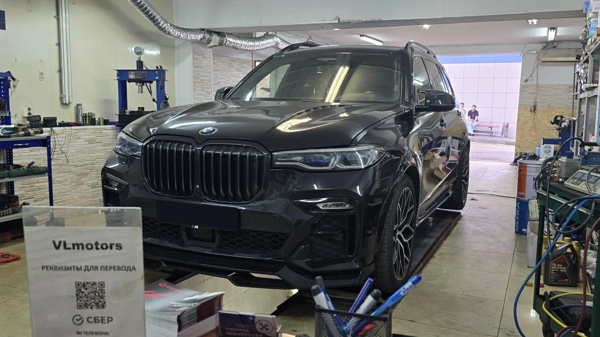

Чиним 70 марок: от Toyota до Haval
Ходовая, тормоза, рулевое, двигатель и трансмиссия. Сначала диагностика на оборудовании.
Пн-Сб 09:00-19:00, воскресенье выходной. Русская улица, 19а
Системы машины, с которыми работаем
Сварка и доработка выхлопа.
Условия уточняйте по телефону.
Найдите свою марку
Работаем с японскими, корейскими, европейскими, американскими и китайскими машинами. Впишите марку, мы подсветим её в списке.
Нет вашей марки в списке? Позвоните или напишите, подскажем, возьмёмся ли.
Что пишут клиенты
Отзывы из 2ГИС, сокращены без изменения смысла.
Всегда вежливые, отзывчивые и оперативные. Цены адекватные, ничего лишнего не навязывают. Тот случай, когда спокойно доверяешь машину и знаешь, что всё будет по делу.
Ответ на каждый вопросПриехал на диагностику с кучей вопросов, и на каждый получил чёткий ответ. Всё разъяснили и сразу на месте провели нужные работы.
Задние тормозаБыл на переобувке, заодно попросил проверить тормоза. Задние сильно скрипели: всё почистили, поменяли тормозную жидкость и прокачали. Съездил за запчастью, тут же за 40 минут всё поменяли. Скрипа больше нет.
Дизельный авто и ещё кореец - очень капризная машина, требующая тщательного ухода. Отремонтировали ходовку, поменяли масла, подклеили и приварили где нужно. Теперь бегает как жеребец.
Взялись, когда другие отказалиПодвеска упала в пол. Обзвонил порядка десяти сервисов, и этот единственный не придумывал отмазки. Профессионально нашли все дефекты, через пару часов машина была готова к дальней поездке.
Обратилась с ошибкой. Сама в этом ничего не понимаю, мне всё доходчиво объяснили и предложили несколько вариантов решения.
Через полчаса с новыми колодкамиПриезжал на проточку дисков. Увидел, что нужны и колодки: тут же заказали, через полчаса привезли и поставили вместе с проточенными дисками.
Как записаться
Позвоните или напишите заранее: назовите марку и что беспокоит.